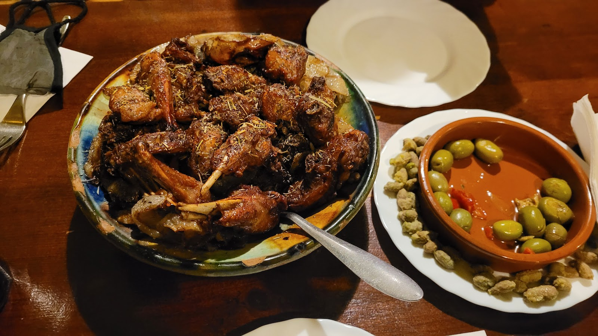
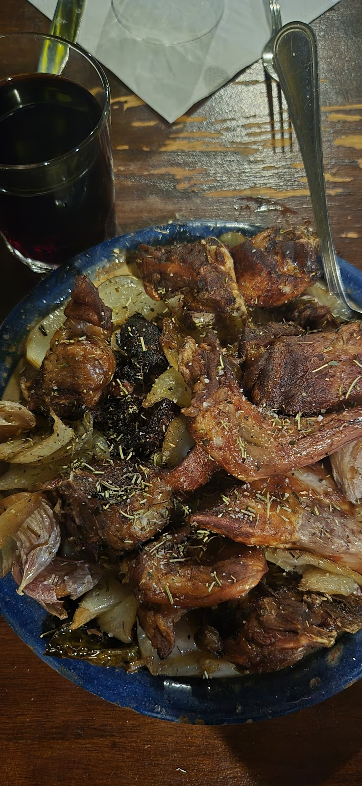
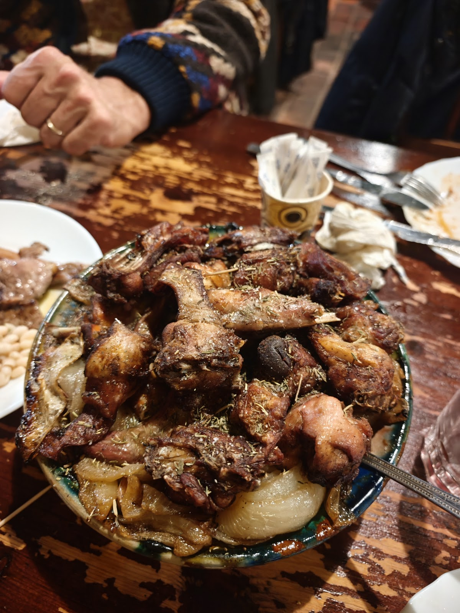
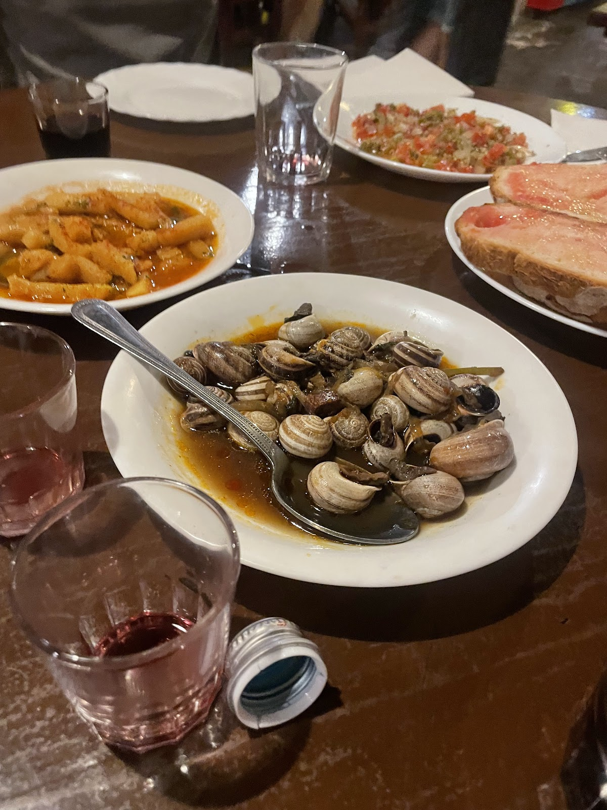
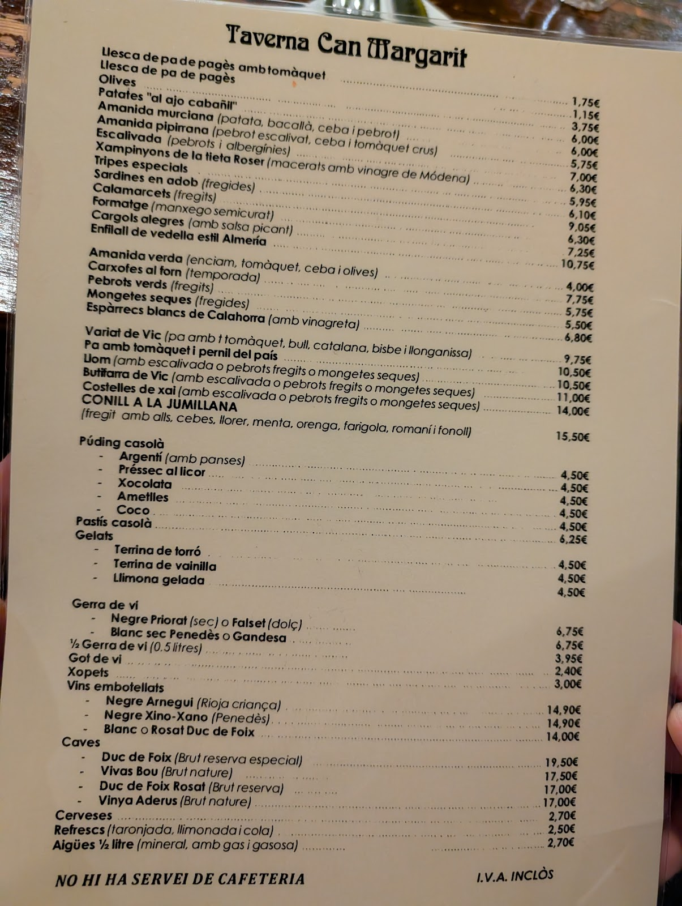
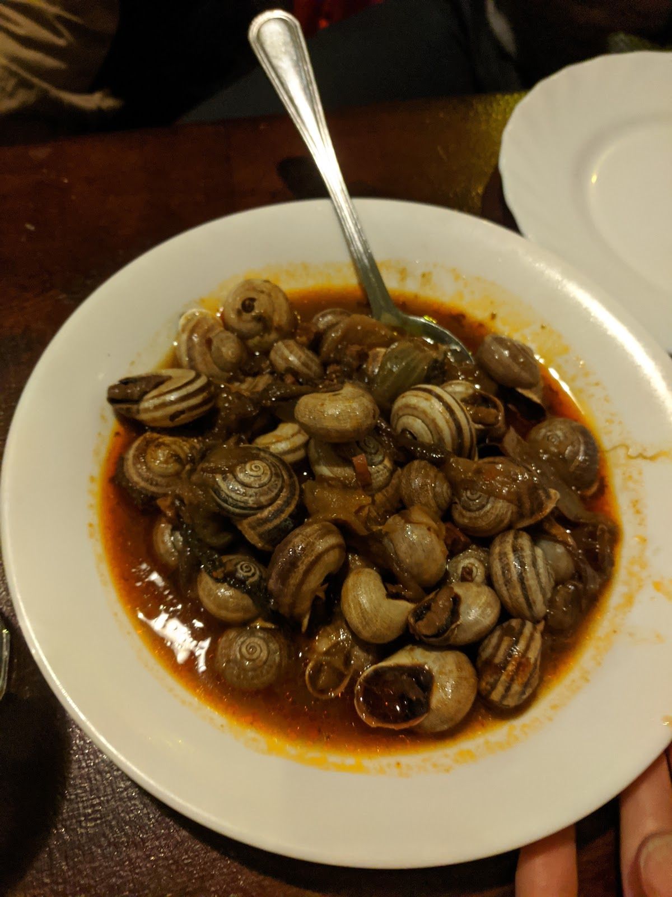

Una taberna con mucha historia en un antiguo establo. Cuina catalana, vino de la bota y mesas largas para celebrar.A taberna full of history in a former stable. Catalan cooking, wine from the barrel and long tables made for gathering.
Entrar aquí es viajar en el tiempo: paredes de piedra, velas, vino que baja de la bota y platos catalanes de toda la vida. Ideal para grupos, con espacios grandes y ese ambiente único.Stepping in is a trip back in time: stone walls, candlelight, wine poured from the barrel and timeless Catalan dishes. Perfect for groups, with big rooms and a one-of-a-kind atmosphere.





